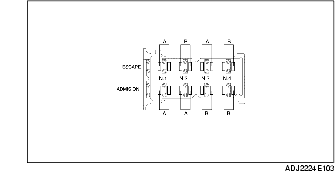

CONTROL JUEGO VALVULAS (ZJ, Z6)
B3E011012111W01
1. Quitar la tapa de la batería.
2. Desconectar el cable negativo de la batería.
3. Quitar la tapa inferior y el protector contra salpicaduras (lado derecho).
4. Quitar el cartucho del filtro de aire. [Especificaciones para Europa (volante a la izquierda)] [Véase REMOCION/INSTALACION SISTEMA DE ADMISION (ZJ, Z6)].
5. Quitar la caja del filtro de aire y apartar la tapa del filtro de aire con el conector del PCM todavía conectado. (especificaciones para Reino Unido) [Véase REMOCION/INSTALACION SISTEMA DE ADMISION (ZJ, Z6)].
6. Quitar las bobinas de encendido. [Véase REMOCION/INSTALACION BOBINA DE ENCENDIDO (ZJ, Z6)].
7. Desconectar el tubo flexible de ventilación.
8. Quitar la tapa de la culata.
9. Medir el juego de las válvulas.
-
(1) Girar el cigüeñal en en sentido horario así que el cilindro N.1 esté en la posición PMS del tiempo de compresión.
-
(2) Medir el juego de las válvulas en correspondencia del punto A que se muestra en la figura.

-
• Si no está conforme a lo especificado, sustituir el taqué y adjustar el juego de la válvula al valor medio. [Véase AJUSTE JUEGO VALVULAS (ZJ, Z6)].
-
Juego válvula estándar [con motor frío]
-
0,27-0,33 mm (0,0107-0,0129 in)
-
Nota
-
• Asegurarse de marcar los valores medidos para escoger taqués adecuados para sustituir.
-
(3) Girar el cigüeñal de 360° en en sentido horario así que el cilindro N. 4 esté en la posición PMS del tiempo de compresión.
-
(4) Medir el juego de las válvulas en correspondencia del punto B que se muestra en la figura.

-
• Si no está conforme a lo especificado, sustituir el taqué y adjustar el juego de la válvula al valor medio. [Véase AJUSTE JUEGO VALVULAS (ZJ, Z6)].
-
Juego válvula estándar [con motor frío]
-
0,27-0,33 mm (0,0107-0,0129 in)
-
Nota
-
• Asegurarse de marcar los valores medidos para escoger taqués adecuados para sustituir.
10. Instalar la tapa de la culata. (Véase Detalles de instalación de la tapa de la culata).
11. Conectar el tubo flexible de ventilación.
12. Instalar las bobinas de encendido. [Véase REMOCION/INSTALACION BOBINA DE ENCENDIDO (ZJ, Z6)].
13. Instalar el cartucho del filtro de aire. [Véase REMOCION/INSTALACION SISTEMA DE ADMISION (ZJ, Z6)].
14. Instalar la tapa inferior y el protector contra salpicaduras (lado derecho).